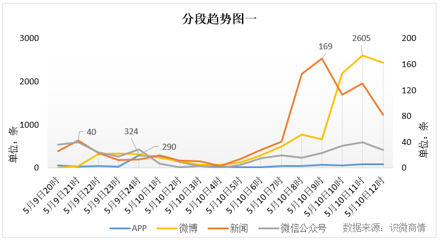
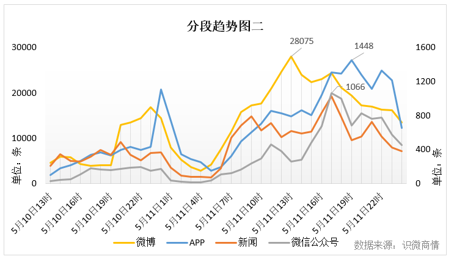
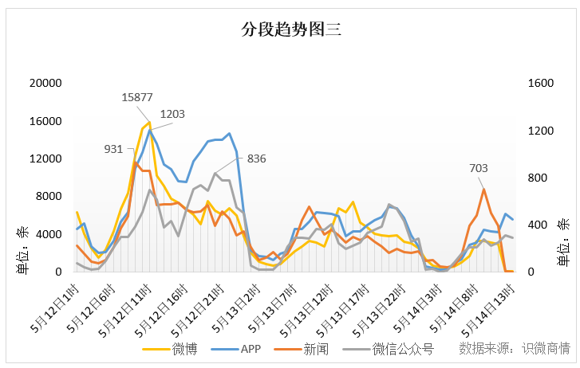

舆情初显：同情与愤怒

在主流媒体报道后不久，事件相关网民言论开始增多。除了对受害空姐表示惋惜和同情外，有关网约车安全以及郑州地方治安问题逐渐成为网民讨论的热点。5月10日，“财经网”、“北青网”等多家媒体发布有关滴滴进行回应和道歉的消息，舆论焦点转向滴滴责任以及其回应行为，公众舆论场不断发酵。5月10日9时开始，微博平台舆情信息开始猛增。
舆情爆发：问责与追究

5月10日下午开始至5月11日晚，事件相关舆情呈井喷式增长。细究上图，忽略舆情随作息的规律变化可以发现，在这一时段内，新闻、微博、微信、APP这几大平台内的舆情信息均为上升趋势。此阶段内，事件出现重大进展：5月10日，郑州市公安局官方微博@平安郑州发布警情通报称嫌疑人作案后弃车跳河，第二天下午14时左右，郑州市红十字水上义务救援队开始搜索打捞犯罪嫌疑人刘某华。除此之外，滴滴再次发布声明，悬赏百万征集嫌疑人线索，并公布嫌疑人相关信息。
5月10日晚，滴滴发布悬赏声明（后被删除）并公布了嫌疑司机的相关信息，引发舆论震荡。此时段内，微博、APP及新闻平台的信息量浮动明显。主流媒体舆论场聚焦滴滴公司所应承担的责任和管理上的漏洞，以及悬赏行为合法性的讨论。5月11日，“澎湃新闻网”报道称，“澎湃新闻记者通过实测发现，滴滴顺风车平台的车主注册环节存在安全隐患，女性司机上传了男性司机的证件之后，平台依然能显示‘实名认证成功’。”随后，“环球网”、“网易网”、“凤凰网”等多家媒体进行了转载。“环球时报”发文《紧急提醒！滴滴的百万悬赏，别再发了！》，指出滴滴悬赏行为没有丝毫的合法依据，此条新闻被“新浪新闻”、“上海观察”、“中国经济网”等多家媒体进行转载。
此时段的民间舆论场同样活跃。与主流媒体不同的是，网民除了讨论滴滴的责任和悬赏公告外，嫌疑人跳河后的去向也成为本时段网民关注的重点议题。许多网民还根据滴滴公布的信息对嫌疑司机进行人肉搜索，@钢笔様子、@SC_木头鱼、@速报哥等新浪微博黄V用户贴出了搜索到的嫌疑人的相关信息。有网民甚至贴出给嫌疑人支付宝账号打款的截图，以此证明嫌疑人并未溺亡。值得一提的是，在此时段内，网上还出现了有关“嫌疑人被抓”的视频。5月11日下午，“新浪微博”用户@平安郑州澄清，网上流传的“杀害网约车乘客嫌疑人刘某华已被抓获”、“嫌疑人仍在使用支付宝”等相关视频图片均为不实信息。
舆情延续：责任与反思

从整体上看，本时段内，事件整体舆情随着案件的告破而逐渐平缓。尽管舆情量低于前一阶段，但在5月12日这一时段内，事件舆情仍然保持高值。除了上一阶段舆论热点的话题延续外，5月12日，@平安郑州宣布案件告破，警方刑拘擅自传播命案现场照片的五人，引发了新的热议话题。“中国新闻网”发布《警方通报“空姐遇害案”：DNA检测结果确认嫌疑人身份》，“人民网”发布《郑州警方：四人擅自传播“空姐被害案”现场照片被刑拘》，“央视网”、“新华社”、“澎湃新闻网”等其他主流媒体也对案情进展进行跟踪报道。另外，5月12日舆情量的另一大增长点来自于对自媒体“二更食堂”的谴责。5月11日晚，“二更食堂”发布有关空姐遇害案的低俗文章，引发媒体与网民的谴责，相关舆情在12日进入爆发期。“澎湃新闻网”发布《空姐的“两次死亡”：新媒体时代的遇害案》，对“二更食堂”的不当推文展开批评。“新华网”、“人民日报”、“新京报”等主流媒体也对此进行批评报道。网民大量转发和评论了主流媒体关于“二更食堂”的评论文章。
5月13日至14日，案件相关舆情下降明显，舆论主要围绕“责任”与“反思”两个话题展开。主流媒体针对此次案件发布了一系列评论文章，反思案件暴露的问题。“人民日报”发表《约车不是“约会” 乘客个人信息岂能泄露？》，谴责滴滴平台存在管理漏洞。“澎湃新闻网”发表《反思数据经济：社交目的导向，使网约车的数据系统放弃了安全》一文，直指数据经济中的安全问题。网民则聚焦滴滴平台的社会责任、自我保护、案件发生的社会原因等话题。“新浪微博”用户@王语漩、@北京人不知道的北京事儿等黄V指责滴滴没能及时处理投诉，@中华小鸣仔安利防身软件，@作家陈岚发布文章《空姐遇害案的幕后，变态恶魔是怎么养成的》探究案件发生的社会原因。